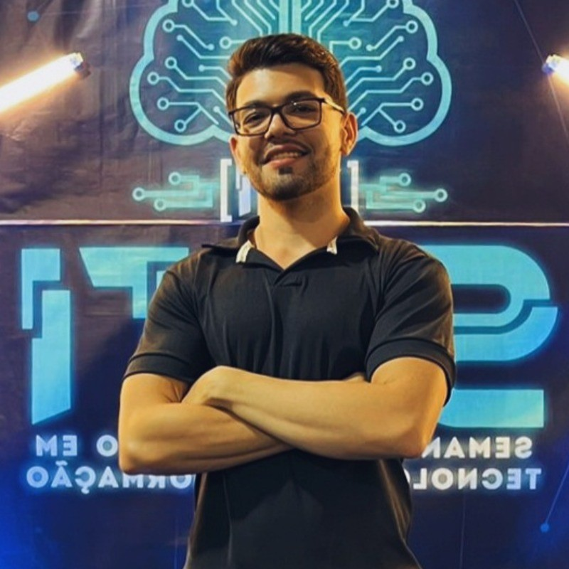

Identidade visual
Logotipos e sistemas de marca construídos do zero, com atenção à versatilidade entre mídias.
Design gráfico & desenvolvimento front-end
Transformo ideias em interfaces e artes que comunicam com clareza. Trabalho na fronteira entre design visual e código — do logotipo à tela renderizada no navegador — cuidando de cada detalhe, do pixel ao componente.
Enviar um e-mail
Logotipos e sistemas de marca construídos do zero, com atenção à versatilidade entre mídias.
Artes e campanhas para redes sociais pensadas para consistência visual e engajamento.
Páginas e componentes front-end que traduzem o design em experiências reais no navegador.